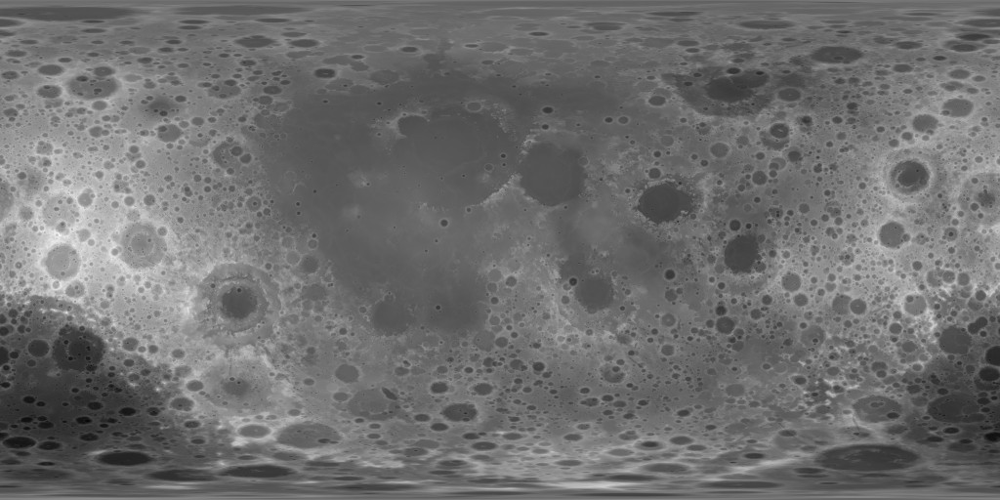

SkyVR
○
Preloading Assets...
○
Connecting to Network...
○
Downloading Star Data (35MB)...
○
Synchronizing Reality...
Taking longer than usual? Mic permission might be pending or blocked.
Join without Audio
----

Astronomy Controls
×
Visibility
Meridian
Equator
Ecliptic
Cardinal Points
Celestial Poles
Location
Latitude
−
°
N
+
Longitude
−
°
E
+
Time Shift
UTC+00:00
Year
−
+
Month
−
+
Day
−
+
Sidereal Day
−
+
Hour
−
+
Minute
−
+
now

|
Imprint
|
Privacy